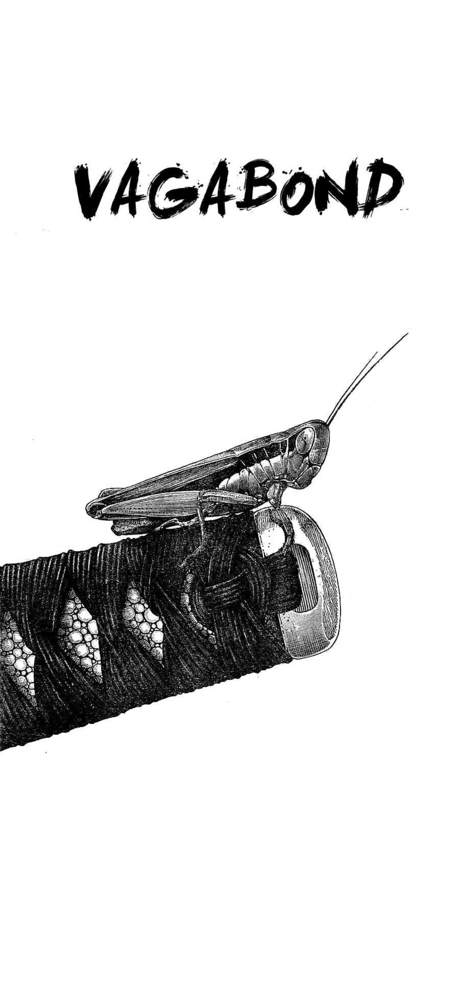
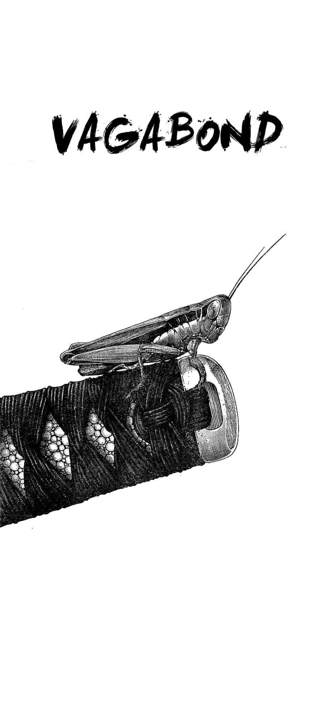

перевтілення
сучасна творчість, прояв себе та своїх почуттів перейшли в дещо іншу ніж колись форму.
Звісно класичні види мистецтва зовсім не втратили своєї актуальності, але з часом вони стали значно більш абстрактними та універсальними. Універсальними настільки, що хоч кожен може усвідомити їх красу, але мало хто здатен знайти в них конкретно себе.
Саме тому такої популярності набрали нові, більш специфічні види мистецтва, такі як манга, аніме, ігри та всякого роду добре зроблений пізнавальний контент.
Такого роду творчість хоч часто не витримує жодної критики при деконструкції, але в ній часто можна, хоч на секунду, знайти себе та відчути що хтось пережив те саме що ти та розуміє твої переживання і готовий поділитись своїми.
З таким підходом стає очевидно, чому мистецтво так часто зараз сприймається індивідуально. Не кожен відчуває в собі ті струни, які здатен затронути той чи інший витвір.
Тим не менше ось витвори, які затронули особисто мене:
місце де все бере початок
Саме ці шедеври привели мене в світ східної культури.
Вони вразили мене настільки, що я досі думаю про них та бажаю відчути їх знову.
Кожен раз коли я на дні вони проявляються і дозволяють мені рухатися далі.
трилогія буття
Ця трилогія показує те, як я маю рухатись і чого маю прагнути.
Кожен герой цих історій знайшов свій шлях і йде ним гордо, але смиренно.
 

трилогія подорожі

трилогія життя